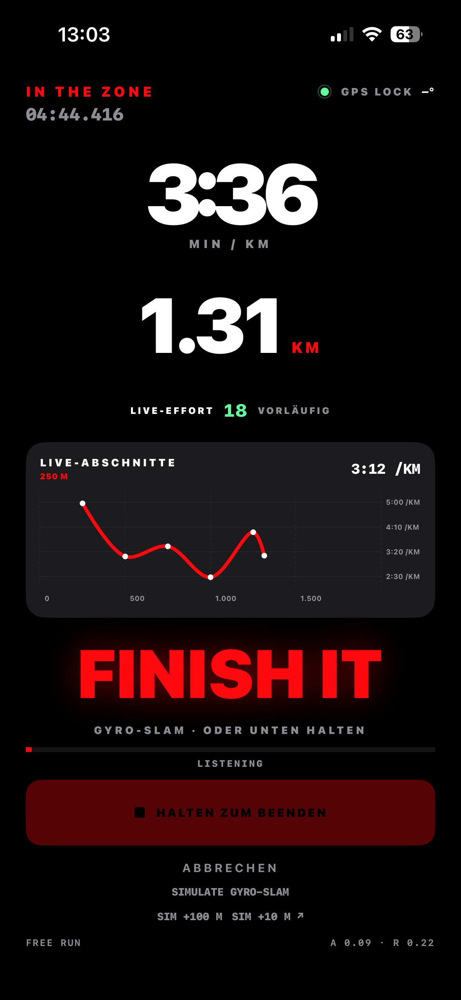
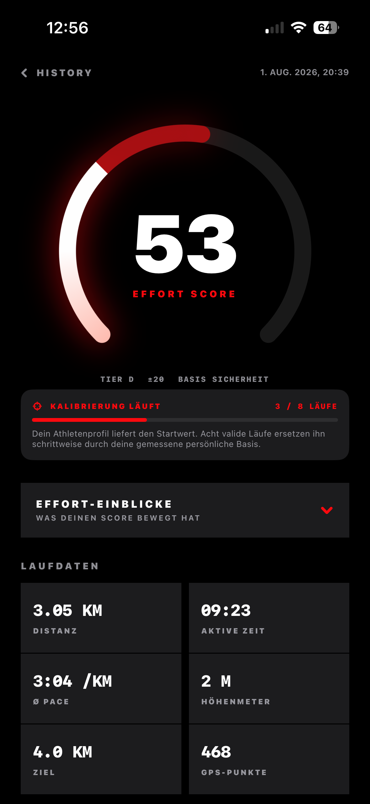
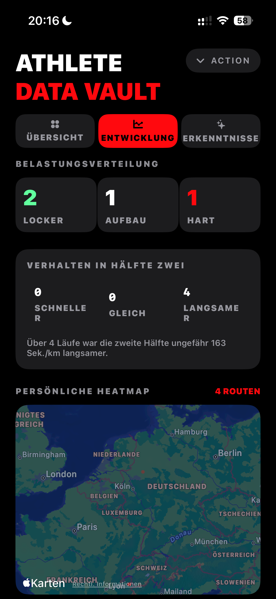
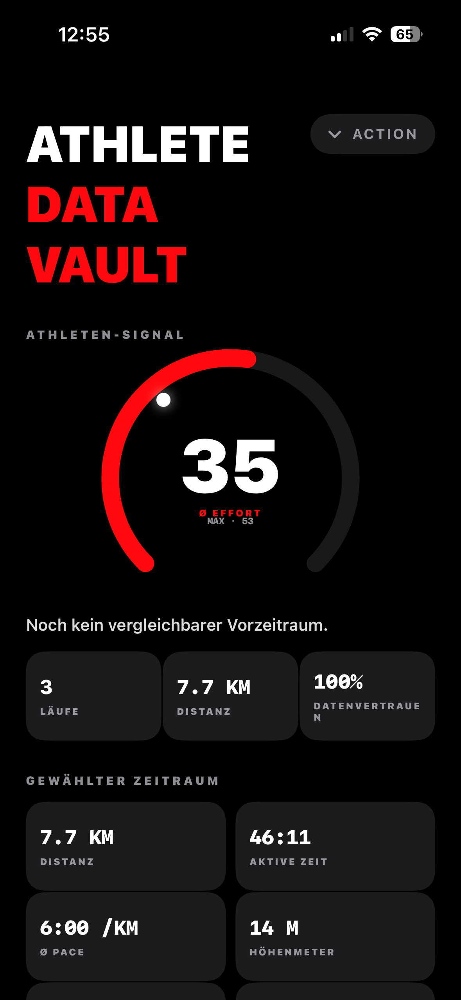
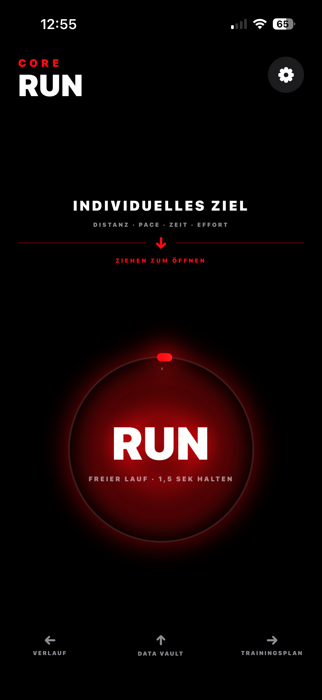
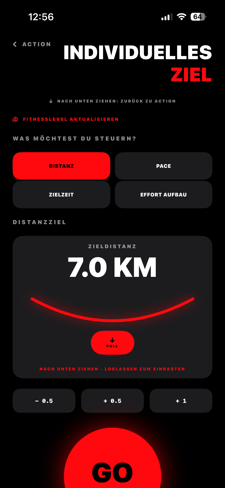
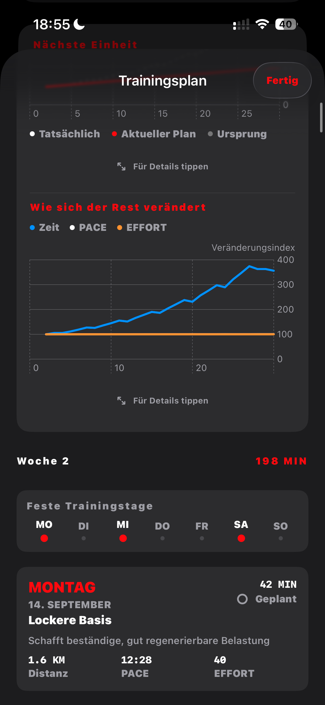
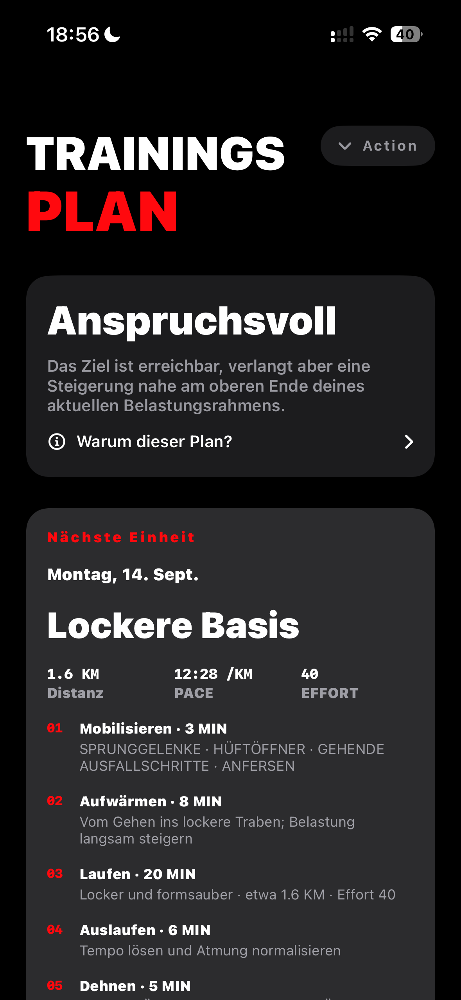

Beginne etwas ruhiger und baue die Belastung gleichmäßig auf.
73 GIBT DIR DIE ORIENTIERUNG FÜR DEINEN NÄCHSTEN RUNNATIVE IPHONE RUNNING EXPERIENCE
TRACK THE
EFFORT.
DEIN LAUF. DEIN EFFORT. DEIN NÄCHSTER SCHRITT.
BONUS JETZT ANMELDEN UND SPÄTEREN BONUS SICHERN.
- 01 Persönlicher Effort
- 02 Plan auf deiner Basis
- 03 Native iPhone App

TRACK THE EFFORT • PERSONAL BASELINE • EFFORT SCORE • TRAININGSPLAN • DATA VAULT • TRACK THE EFFORT • PERSONAL BASELINE • EFFORT SCORE • TRAININGSPLAN • DATA VAULT •
01 — DAS HERZ VON CORE RUN
NICHT IRGENDEIN WERT.
DEIN EFFORT.
Der Effort Score verdichtet deine Leistungs- und Umweltdaten zu einem persönlichen Score von 0 bis 100. Er zeigt dir auf einen Blick, wie fordernd dein Lauf anhand deiner Daten einzuordnen ist, und gibt dir Orientierung für dein nächstes Training.
SO ENTSTEHT DEIN SCORE
DEIN LAUF WIRD PERSÖNLICH EINGEORDNET.
01 / 06
AKTUELLES FITNESSLEVEL
Dein persönlicher Ausgangspunkt.
- FITNESS
- GESCHWINDIGKEIT
- DISTANZ
- DAUER
- HÖHENPROFIL
- WETTER
73
FORDERND
EFFORT SCORE · 0—100
WEITERSCROLLEN · DEINE DATEN WERDEN ZUM SIGNAL
DIE EINORDNUNG IM DETAIL
SIEH, WAS DEINEN
RUN GEPRÄGT HAT.
Der Score gibt dir die schnelle Einordnung. In der Analyse erkennst du anschließend, wo Tempo, Strecke und Höhenprofil deinen Run geprägt haben.
- 73Persönliche Belastung auf einen Blick
- 01Strecke, Pace-Verlauf und Höhenprofil im Detail
- →Konkrete Orientierung für den nächsten Lauf

03 — ATHLETE DATA VAULT
DEINE DATEN.
DEINE BASIS.
Der Athlete Vault verbindet deine Läufe, Belastung und Datenqualität zu einem persönlichen Athletenprofil. So vergleicht Core Run dich immer stärker mit deiner eigenen Entwicklung.


DEINE BASIS WÄCHST MIT DIR
JEDER LAUF MACHT
DEINEN SCORE PERSÖNLICHER.
Mit jedem absolvierten Lauf analysiert Core Run deine Datenbasis, versteht deine individuellen Grenzen besser und passt die Einordnung über die Zeit an dich an.
Eine sichere Ausgangsbasis, bevor genügend eigene Daten vorhanden sind.
Eigene Geschwindigkeit und Belastung prägen die Einordnung zunehmend stärker.
Deine echten Läufe werden zum Maßstab für das, was zu dir passt.
04 — DEINE NÄCHSTE EINHEIT
LAUF SO,
WIE DU LAUFEN WILLST.
Core Run begleitet beides: den spontanen freien Lauf und eine gezielte Einheit für dein persönliches Ziel.
FREI ODER GEZIELT
FREIER LAUF.
FREIER LAUF.
ODER MIT ZIEL.
Du entscheidest, wie du starten möchtest. Ohne Umwege loslaufen oder eine einzelne Einheit genau auf dein Ziel ausrichten.


WÄHREND DEINES RUNS
DIE WICHTIGSTEN DATEN.
DIE WICHTIGSTEN DATEN.
SOFORT LESBAR.
Sämtliche Daten sind so angeordnet, dass ein kurzer Augenblick genügt, um alles Relevante zu verstehen.
- Wichtigste Laufwerte
- Visuelles und akustisches Feedback
- Voll anpassbares Layout
05 — ODER LASS CORE RUN VORAUSDENKEN
KEIN STANDARDPLAN.
DEIN INDIVIDUELLER TRAININGSPLAN.
Deine Laufhistorie, dein aktueller Stand, dein Ziel und dein Alltag formen gemeinsam einen Plan, dessen Einheiten aufeinander abgestimmt sind und sich mit dir weiterentwickeln.
WAS DEINEN PLAN FORMT
SECHS SIGNALE. EIN PLAN, DER ZU DIR PASST.
DEIN PLANAUFEINANDER ABGESTIMMT


PERSONALISIERT. NACHVOLLZIEHBAR. VORSICHTIG.
DER PLAN BEGINNT
BEI DIR.
Die erste Version ist ein persönlicher, regelbasierter Trainingsplan – kein magischer KI-Coach. Sie nutzt deine echte Basis, schützt vor unrealistischen Sprüngen und reagiert vorsichtig auf hohe Belastung und verpasste Einheiten.
CORE RUN MANIFESTO
FUCK THE PACE.
— TRACK THE EFFORT.
06 — DEIN INPUT BAUT CORE RUN
SAG UNS,
WAS DIR FEHLT.
Eine Idee, Kritik oder etwas, das dich an Lauf-Apps nervt? Schreib es direkt auf. Kein Konto und keine verpflichtende E-Mail-Adresse.
KEIN LOGIN.E-MAIL OPTIONAL.DIREKT BEIM BUILDER.
06 — NOCH FRAGEN?
THE
RUN DOWN.
WAS BEDEUTET DER EFFORT SCORE?+
Er ordnet die Belastung eines Laufs von 0 bis 100 ein. Entscheidend ist nicht nur die Pace, sondern dein aktuelles Fitnesslevel, Geschwindigkeit, Distanz, Dauer, Höhenprofil und Wetter.
WANN KANN ICH CORE RUN TESTEN?+
Die App befindet sich in aktiver Entwicklung. Mitglieder der Waitlist erfahren zuerst, sobald eine begrenzte Testphase startet.
IST DER TRAININGSPLAN VOLLSTÄNDIG ADAPTIV?+
Noch nicht. Er startet bereits auf Grundlage deiner Historie und deines Fitnessprofils und reagiert vorsichtig auf bestimmte Belastungs- und Ausfallsignale. Weitere Erholungsdaten sollen später stärker einfließen.
STARTET CORE RUN NUR AUF DEM IPHONE?+
Ja. Der erste Fokus liegt auf einer nativen iPhone-App, damit Sensorik, Haptik und Laufinteraktion konsequent umgesetzt werden können.
ERSETZT CORE RUN MEDIZINISCHE BERATUNG?+
Nein. Core Run ist ein Fitness- und Laufprodukt und kein medizinisches Diagnose- oder Behandlungsangebot.
EARLY ACCESS
READY TO
TRACK THE EFFORT?
Jetzt anmelden und späteren Bonus sichern.